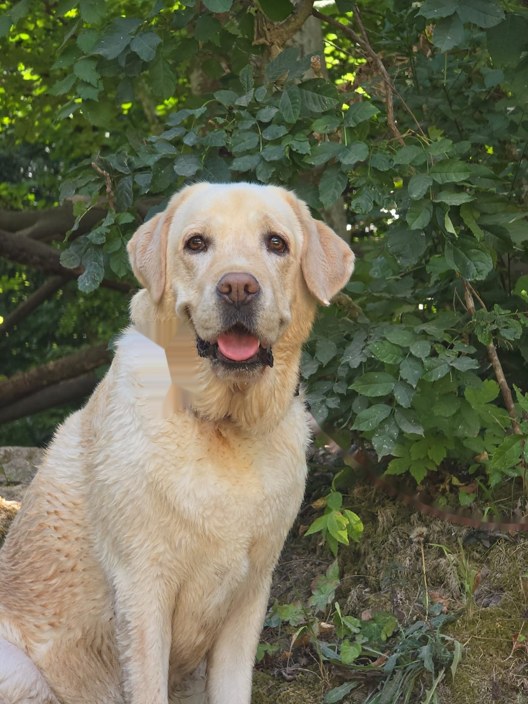

Coco explore les plages, les sentiers et les bonnes adresses autour de Cavalaire-sur-Mer pour te dire, avant d'y aller, si ton chien y sera vraiment le bienvenu.

Autorisée aux chiens toute l'année, de 21h à 6h, en laisse.
Chiens en laisse acceptés hors saison estivale, ou avant 8h / après 19h en été.
Chiens en laisse tolérés en dehors des zones de baignade surveillées.
Sable fin, eau cristalline et une cani-douche pour rincer son chien après la baignade.
Autorisée aux chiens en laisse toute l'année, à la Pointe des Sardinaux.
Sans restriction hors saison, ou de 21h à 6h en été, face à Saint-Tropez.
Chiens en laisse toute l'année sur la promenade Henri-Fabre (pas sur le sable).
Le littoral n'est pas très généreux avec les chiens en dehors du Var — voici les exceptions qui valent le détour, jusqu'aux Bouches-du-Rhône et à la Camargue.
Une plage officiellement dédiée aux chiens, près du port de Garavan.
La seule plage de Nice autorisée aux chiens, à l'ouest de la ville.
Toutes les criques des deux îles sont accessibles en laisse — plus de 28 spots.
Un espace de galets entièrement réservé aux chiens, en contrebas du stade.
La meilleure option dog-friendly du secteur, le moins accueillant de la côte.
Une petite crique de galets dans la continuité des Marinières.
La seule plage autorisée de Cagnes, avec une douche pour chiens.
Une zone dédiée aux chiens entre Monaco et Menton.
La seule plage de Cap-d'Ail ouverte aux chiens, entre Monaco et Nice.
Un espace canin sur la plage de Bonnegrâce, entre surf et baignade.
Une crique entièrement dédiée aux chiens, accessible toute l'année.
L'unique exception à l'interdiction des chiens sur les plages de la ville.
Zone chiens toute l'année, sans restriction horaire, près des étangs de Villepey.
Début de la zone dog-friendly des Alpes-Maritimes, avec douche pour chiens.
Une partie de la plage autorisée aux chiens, baignade permise, au-dessus du port.
Une zone canine créée à la demande des propriétaires, entre L'Ayguade et Les Salins.
Zone tolérée entre les garages à bateaux et le fort de Brégançon.
Zone de mise à l'eau pour chiens, devant l'ancienne usine.
Chiens en laisse autorisés toute l'année, sans restriction horaire.
Espace dédié aux chiens avec cani-douche — vérifier l'emplacement actuel.
Trois calanques autorisées aux chiens, accès en navette maritime.
Petite calanque de la Côte Bleue où les chiens en laisse sont tolérés.
En Camargue, chiens en laisse acceptés toute l'année au-delà du canal.
Une balade en laisse accessible à toute heure, entre maquis et vues sur la mer.
Chiens en laisse autorisés partout dans le parc, sous réserve du risque incendie l'été.
Laisse recommandée, attention aux troupeaux protégés par des patous.
Pas d'interdiction générale, mais laisse obligatoire sur la face Nord.
Chiens interdits en cœur de parc, même en laisse — zone périphérique tolérée.
Même règle que dans tous les parcs nationaux : chiens interdits en cœur.
Camping 4 étoiles à 400m de la plage, chiens acceptés sous conditions.
Accès direct à pied à une plage dog-friendly, entre Cannes et Saint-Tropez.
Jusqu'à 2 chiens acceptés, petit cadeau de bienvenue à l'arrivée.
Le palace mythique de la Promenade des Anglais accepte les chiens.
Les pieds dans l'eau, chiens acceptés même au restaurant du camping.
Tarif chien transparent (2€/nuit), entre Toulon et Bandol.
Cadre boisé près de Cannes, entre mer et massif de l'Estérel.
Plusieurs campings et hôtels acceptent les chiens, conditions variables.
Campings familiaux entre Esterel et mer, chiens acceptés.
Hôtels de charme en centre-ville, chiens acceptés.
Hôtels urbains dog-friendly, bonne base pour explorer la rade.
Hôtels de bord de mer, à deux pas de la Dog Beach.
Villas et gîtes dog-friendly autour du golfe.
Campings familiaux, secteur avec peu de plages canines.
Hôtel 5 étoiles avec parc et vue mer, à 10 min de Pampelonne.
Hôtels de la Croisette acceptant les chiens, proche des Îles de Lérins.
Hôtels de bord de mer, près de la cani-plage de Garavan.
Près de deux plages canines équipées de douches.
Villages de vacances, à savoir : plage canine locale supprimée depuis 2018.
Hôtels de chaîne, offre dog-friendly limitée dans ce département.
Mas, gîtes, hôtels et campings acceptant les chiens dans le delta du Rhône.
Gîtes et chambres d'hôtes acceptant les chiens, souvent sans supplément.
Gîtes et chalets acceptant les chiens autour de Serre-Ponçon et du Verdon.
La baignade en eau douce la plus proche de Cavalaire, à environ 1h de route.
Le lac le plus célèbre du Verdon, eaux turquoise spectaculaires.
Alternative plus calme à Sainte-Croix, mêmes eaux turquoise.
Cadre rural et paisible, à moins d'une heure de la côte.
Petit lac verdoyant à 20 minutes de Toulon.
Chute de 42 mètres et rivière turquoise, balade facile.
Petit lac entouré de roches rouges, près de Fréjus.
Eau calme et criques nombreuses, dans les basses gorges.
Baignade tranquille, à côté du musée de la Préhistoire.
Cascades, vasques naturelles et pont suspendu himalayen.
Canyon calcaire avec vasques, à 15 minutes de Toulon.
Spot de baignade confidentiel, accès limité en stationnement.
Rivière facile d'accès, du Saut de Cabri au pont romain.
Baignade tranquille sur la principale rivière du Var.
Petit canyon boisé aux parois rouges façon Corse.
Le fleuve frontière entre Var et Alpes-Maritimes.
Cascades et canyons dans l'arrière-pays niçois.
Un spot discret en Provence Verte, loin de la foule.
Vue sur la Sainte-Victoire, balade plutôt que baignade.
Alternative tranquille à la sortie des gorges du Verdon.
Balade en laisse jusqu'au gouffre, mais baignade interdite dans la rivière.
Plages surveillées interdites aux chiens, mais criques sauvages et zone dédiée à Embrun.